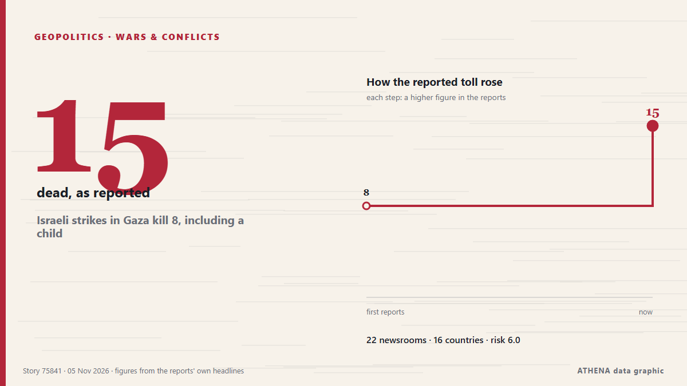

Γεωπολιτική, Πολιτική & Ασφάλεια
ΧορηγούμενοΠαρουσιάζεται από  Cybernetics and Artificial Intelligence Lab Welcome to the Cybernetics and Artificial Intelligence Laboratory, established at the Department of Business Administration of the National and Kapodistrian University of Athens. The lab is headed by Professor Dimitrios Thomakos. The lab aims to do research that can be published in top venues. Our research uses tools and methods of Artificial Intelligence, and lies in the following areas: - Forecasting - Decision making - Cyber security - Finance We are always looking forward to collaborating with exceptional students!
Cybernetics and Artificial Intelligence Lab Welcome to the Cybernetics and Artificial Intelligence Laboratory, established at the Department of Business Administration of the National and Kapodistrian University of Athens. The lab is headed by Professor Dimitrios Thomakos. The lab aims to do research that can be published in top venues. Our research uses tools and methods of Artificial Intelligence, and lies in the following areas: - Forecasting - Decision making - Cyber security - Finance We are always looking forward to collaborating with exceptional students!
Οι τίτλοι των ειδήσεων παρουσιάζονται στα αγγλικά, όπως δημοσιεύτηκαν.

Πόλεμοι & συγκρούσειςIsraeli strikes in Gaza kill 8, including a child
Five people were killed in Khan Yunis and three in Gaza City, according to Gaza's civil defence service. από Free Malaysia Today
| 25 Οκτ | 179 |
|---|---|
| 26 Οκτ | 318 |
| 27 Οκτ | 278 |
| 28 Οκτ | 236 |
| 29 Οκτ | 245 |
| 30 Οκτ | 287 |
| 31 Οκτ | 154 |
| 1 Νοε | 212 |
| 2 Νοε | 316 |
| 3 Νοε | 351 |
| 4 Νοε | 392 |
| 5 Νοε | 310 |
| 6 Νοε | 146 |
| 7 Νοε | 1 |
Putin puts more Japan Tobacco’s Russian assets under temporary management
All shares in Pereslavl-Tobacco, 100% of the shares in the authorized capital of JTI Innovative Products LLC, and 100% of the shares in the authorized capital of JTI Russia LLC were placed under the… από TASS (English)
Abdul El-Sayed's victory proves supporting Palestine is no electoral liability
With New Hampshire and Georgia staying in Democratic hands, Republicans now look to Michigan for a pickup, where Democrat Abdul El-Sayed is competing with Republican Mike Rogers. από France 24 English
Melania Trump urges ‘humanity over war’ with Ukraine, Russia officials
Melania Trump facilitated a meeting between Ukrainian and Russian officials at the White House, calling for a focus on ‘humanity over war.’ This comes as talks are scheduled for the next week in Abu… από Arab News
Trump signs order to preserve Oval Office as national monument
The order comes after Trump made a series of big changes to the decor of the Oval Office and tore down the White House East Wing. από BBC News
Keisha Bottoms makes history as first Black woman elected US governor
Democrat Keisha Lance Bottoms and Republican Rick Jackson are running to be Georgia’s next governor in a race that could reshape control of a crucial battleground state and even make some history… από The National Herald
Pope has voted in the midterms says Vatican
(ANSA) - ROME, 30 OTT - Pope Leo XIV has voted in the US midterm elections, the Vatican said Friday. από ANSA English
Kremlin confirms trilateral talks on Ukraine set for Nov 10-11 in Abu Dhabi
The United States will bring together delegations from Ukraine and Russia in Abu Dhabi on November 10-11 to discuss ending Russia's conflict with Ukraine, post-conflict security agreements and… από CGTN (World)
Brazil's Lula mocks Flavio Bolsonaro over Trump's US midterm election defeat
Our experts unpack what Lula’s victory means for Brazil’s ties with Washington and how it could reshape a region trending right. από Atlantic Council
Turkey's parliament ratifies Mecca pact
Opposition Republican People’s Party (CHP) leader Kemal Kılıçdaroğlu has stated his party will vote in favor of a defense agreement between Türkiye, Pakistan and Saudi Arabia when it comes before… από Hürriyet Daily News
After JD Vance, now Trump Jr blames Iran war for US midterms defeat
Says war in Iran had weighed on Republican candidates, even as voters backed his handling of it. από Express Tribune
What Americans are saying about how they voted in the midterm elections
Pope Leo XIV, the Catholic Church's first US-born pontiff, has voted in the United States midterm elections, submitting his mail-in ballot in Chicago, the Vatican confirmed. από RTÉ News
Death toll from Russian strike on Komyshuvakha rises to 53 as search operation enters 5th day
The strike was the deadliest Russian attack on Zaporizhzhia Oblast since the start of the full-scale invasion. από Kyiv Independent
Kazakhstan president proposes admitting Russia to Organization of Turkic States
Russia’s Digital Development Ministry has proposed cutting off cellular service to smartphones brought in from abroad starting in April 2027 if their owners fail to register them by IMEI number… από Meduza (English)
Massie says his Hegseth impeachment resolution 'much gentler' than what Democrats plan
Republicans now have a small window to advance defense funding priorities before Democrats take control of Capitol Hill. από Breaking Defense
Melania Trump meets with Russian and Ukrainian representatives at the White House
WASHINGTON: First Lady Melania Trump will host “representatives” of Russia and Ukraine in Washington, the White House said Tuesday, without specifying a date or offering further details about who may… από Business Recorder
Trump under pressure on Iran war after Republicans' midterms defeat
US President Donald Trump concedes that the war he ordered on Iran was partly to blame for his Republican Party's sweeping midterms losses -- but even as he comes under pressure, analysts said… από Al-Monitor
Zelensky says hopes US election means more support for Ukraine
Ukraine's President Volodymyr Zelensky has said he hoped the Democrat triumph in the US midterm elections would boost support for Kyiv and help end the war with Russia. από Vanguard
Oil falls for a fourth day on expectations for lower risk of Iran war escalation
Both oil benchmarks closed at their lowest since Aug 31. από The Business Times
Trump says US will end military aid to Israel by end of the year
Says democrats, left-wing politicians using US financial support to Israel as a talking point to criticise Republicans. από Express Tribune
Morocco will ‘uphold Western Sahara ceasefire after UN mission ends’
Morocco will stay committed to the ceasefire in the occupied Western Sahara despite the end of the United Nations peacekeeping mission in the territory, the Royal Palace said on Wednesday. από Cyprus Mail
Trump loses control of Congress
If Republicans lose control of Congress, the rest of his time in office is likely to be consumed by Democratic-led investigations into his administration and his business dealings, and possibly even… από PBS NewsHour
Iran's chief negotiator says Americans voted 'no to war'
Iran's chief negotiator in talks with the US has said that Americans voted "NO TO WAR", after President Donald Trump's Republican Party suffered a stunning defeat in the midterm elections. από MyJoyOnline
Dozens dead and missing after Russian strike on Ukrainian aid centre, officials say
Nov 4 - The death toll from a Russian bombing of an aid distribution point in Ukraine's southeastern Zaporizhzhia region on Monday has risen to 37, with dozens missing, officials said, in one of the… από The Straits Times
Drone attack sparks fire at Ozon logistics centre in Russia’s Adygea
A fire broke out at an Ozon logistics centre in the city of Adygeysk, in Russia’s Republic of Adygea, following a drone attack. από AzerNews
What Trump losing power over Congress means for Iran, Ukraine and foreign policy
Democratic control of Congress could bring greater scrutiny of Trump’s handling of the Iran and Ukraine wars, while leaving him broad foreign-policy powers. από CNBC World
After Republicans routed, Trump devotes first post-US midterm event to White House ballroom
One official said US President Donald Trump had been "in great spirits" on Monday. από TASS (English)
UK PM Burnham says he is ‘open’ to formal apology for slavery, but rules out reparations
At least 12.5 million Africans were abducted and sold into slavery. από Express Tribune
US Midterms: Democrats take control of US Congress as voters reject Trump’s Republicans
Democrats have taken control of both chambers of the United States Congress in the November 3, 2026, midterm elections, dealing a major political setback to President Donald Trump and his Republican… από Vanguard
Iran’s IRGC says two tankers, tugboat were ablaze in Hormuz Strait
Kayhan argued that issues related to Iran and the Strait of Hormuz have become a significant factor in the American midterm elections. από Tehran Times
Democrats projected to take over control of US House of Representatives
Control of the House depends on which party reaches the 218 seats necessary, while the Senate requires 51 for Democrats or 50 for Republicans because of Vice President JD Vance's tiebreaking vote. από PBS NewsHour
Top takeaways from the US midterm elections
Exit polls point to widespread voter discontent over the cost of living and declining Republican support among several key groups that helped Trump win the 2024 presidential election. από The Kathmandu Post